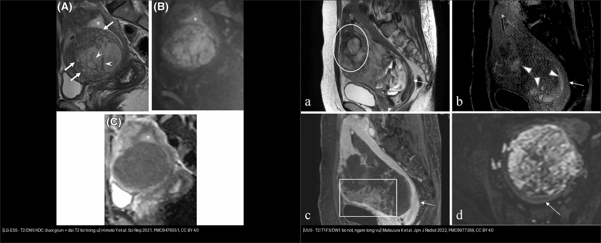
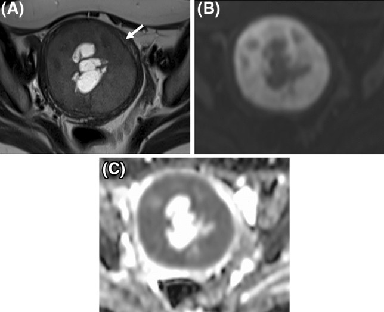
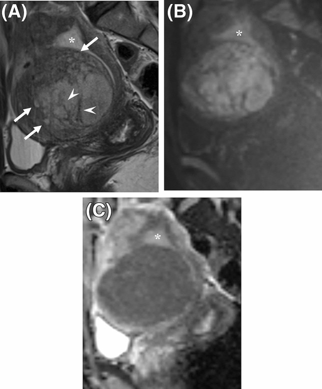
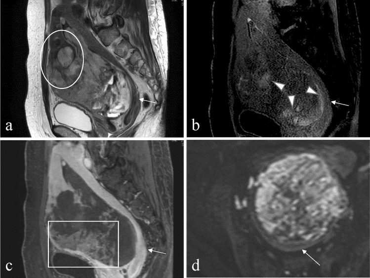
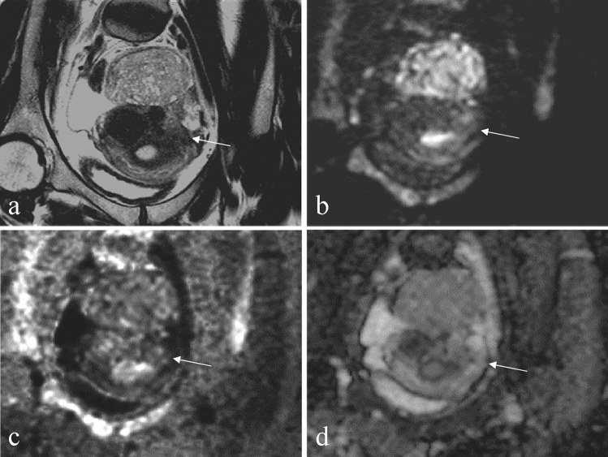

527 — U mô đệm nội mạc tử cung: ESN · LG-ESS · HG-ESS · UUS / Endometrial stromal tumours
Tags: pattern:khoi-co-tu-cung pattern:xam-lan-co vung:tu-cung score:ADC protocol:MRI-tieu-khung
Mức chắc chắn (certainty): tổng hợp y văn (literature synthesis) — nhóm tự biên từ 2 nghiên cứu chẩn đoán CC BY 4.0 (Sci Rep 2021; Jpn J Radiol 2022), gồm các ca nguyên văn có hình; không gắn một ca đơn lẻ duy nhất.
1. Tổng quan bệnh học – cơ chế hình ảnh
- Vấn đề lâm sàng: nhóm u mô đệm nội mạc (endometrial stromal tumours) là u trung mô tử cung hiếm nhưng cực dễ đọc nhầm: LG-ESS bị gọi "u xơ" (lành) → morcellation gieo rắc ổ bụng, tái phát muộn; còn u xơ biến thể bị gọi "sarcoma" → cắt tử cung oan ở người trẻ. Phân biệt then chốt nằm ở MRI + bối cảnh.
- WHO 2020 — 4 thực thể, tiên lượng rất khác nhau:
- U mô đệm nội mạc dạng nốt (ESN): rất lành, bờ đẩy (pushing) rõ, KHÔNG xâm lấn cơ.
- LG-ESS (sarcoma mô đệm nội mạc độ thấp): tuổi trung bình ~39, hay ở người trẻ; fusion JAZF1–SUZ12 (hoặc PHF1/EPC1) ~50–60%; sống 5 năm ~91% nhưng tái phát muộn (nhiều năm).
- HG-ESS: hay YWHAE–NUTM2A/B hoặc BCOR; tuổi trung bình ~61, tiên lượng xấu (sống 5 năm ~33%).
- UUS (sarcoma tử cung không biệt hóa): không có gen đặc trưng, phá hủy cơ ồ ạt, tiên lượng xấu nhất.
- TẠI SAO tín hiệu (vật lý MRI + mô bệnh):
- LG-ESS: tế bào mô đệm dày đặc → nước nội bào "nhốt" chặt → DWI sáng + ADC thấp (Himoto 2021; Matsuura 2022 đo ESS 0,86 ×10⁻³ mm²/s). Điểm nhấn: u thâm nhiễm kiểu "đuôi giun" (worm-like nodular extension) ăn dọc theo cơ, để lại dải cơ lành còn sót → dải T2 tối trong u (intra-tumoral low SI bands), và viền T2 tối quanh u (low SI rim) do cơ phản ứng; u lớn nhanh vượt cấp máu → nang/hoại tử.
- UUS: mật độ rất cao + hoại tử/xuất huyết → T2 không đồng nhất, ổ T1 sáng (methemoglobin), ngấm kiểu "lông vũ" (feather-like enhancement), DWI sáng, ADC thấp (Matsuura 2022 đo 0,90 ×10⁻³ mm²/s).
- Cạm bẫy vật lý — T2 shine-through: u nhiều nước (như u xơ tế bào - cellular leiomyoma) cho DWI sáng giả ở b=1000. Bằng chứng: cellular leiomyoma ADC 1,65 ×10⁻³ mm²/s, và DWI "sáng" ở b=1000 biến mất ở DWI tính toán b=2000 (cDWI₂₀₀₀) — trong khi sarcoma vẫn hạn chế thật.
- Ngưỡng định lượng bắt buộc:
- Hệ MRI LG-ESS vs u xơ biến thể hiếm (Himoto 2021, n=25 LG-ESS / 42 u xơ biến thể): DWI sáng + một trong ba — đuôi giun / dải T2 tối trong u / viền T2 tối quanh u → AUC 0,86–0,89, Se 95%, Sp 67–69%.
- Dấu hiệu khác biệt có ý nghĩa (cùng nghiên cứu): dải T2 tối trong u (p < 0,001), nang/hoại tử (p ≤ 0,02), vắng "dấu chấm lốm đốm" (speckled appearance) (p < 0,001), ADC thấp (p ≤ 0,02).
- Phân biệt u trung mô ác ↔ u xơ T2 sáng (Matsuura 2022, n=32 vs 34): bộ 3 ổ T1 sáng + cDWI₂₀₀₀ + dải T2 tối đạt độ chính xác 84,8% (56/66). Giá trị ADC tham chiếu: ESS/LMS/UUS 0,77–1,03, cellular leiomyoma 1,65 ×10⁻³ mm²/s.
- Khoảng xám: ADC ~1,0–1,2 → không tự chốt; ghép bờ, thâm nhiễm, "đuôi giun", bối cảnh (tuổi trẻ + chảy máu bất thường) và cDWI 2000.
2. Mẫu hình + chẩn đoán phân biệt theo vị trí (gamut)
- Ba câu hỏi gỡ rối mọi khối mô đệm nội mạc: (1) xâm lấn cơ hay bờ đẩy? (2) có "đuôi giun"/dải T2 tối/viền tối? (3) DWI sáng có "chết" ở b=2000 không (T2 shine-through)?
- Theo vị trí:
- Trong lòng tử cung (endometrial cavity): polyp nội mạc, ESN, LG-ESS lồi vào lòng, ung thư nội mạc, carcinosarcoma. Khối lồi lòng + nhẵn + cuống mạch đơn độc → nghĩ polyp/ESN.
- Trong cơ (myometrium) — gamut khó nhất: u xơ + biến thể (cellular, myxoid, FHD), adenomyosis, LG-ESS/HG-ESS thâm nhiễm, LMS, di căn. LG-ESS là "kẻ giả danh u xơ" hay gặp ở người trẻ chảy máu bất thường.
- Lan ra ngoài tử cung: ESS hay lan theo mạch cạnh tử cung, dây chằng rộng, buồng trứng, phúc mạc (thể giả adenomyosis).
- Đặc trưng từng thực thể:
- ESN: khối tròn bờ đẩy rõ, T2 trung gian, không thâm nhiễm, hạn chế khuếch tán nhẹ.
- LG-ESS: "đuôi giun" + dải T2 tối trong u + viền T2 tối + nang/hoại tử; DWI sáng, ADC thấp (0,86); hay lan mạch cạnh tử cung.
- HG-ESS: phá hủy cơ nhiều, T2 hỗn hợp, ngấm kiểu "lông vũ", DWI hạn chế mạnh.
- UUS: khối lớn trong lòng/cơ, bờ nốt, T1 sáng (xuất huyết), ngấm lông vũ, ADC thấp (0,90).
- U xơ tế bào (mimic): T2 sáng hơn cơ, DWI sáng ở b=1000 nhưng b=2000 không sáng, ADC cao (~1,65), bờ trơn, có chấm/dải T2 tối lốm đốm (speckled) — dấu vắng mặt ở LG-ESS.
3. Bảng so sánh phân biệt (ma trận đối chiếu)
| Thực thể (entity) | Hình ảnh điển hình | Chốt vào (rule-in) | Chốt loại (rule-out) | Gợi ý xác nhận |
|---|---|---|---|---|
| ESN (u mô đệm dạng nốt) | Khối tròn, bờ đẩy rõ, không xâm lấn cơ | Bờ đẩy + không thâm nhiễm + không "đuôi giun" | Thâm nhiễm cơ lan tỏa → nghĩ LG-ESS | Mô bệnh sau cắt (chẩn đoán loại trừ) |
| LG-ESS | "Đuôi giun" + dải T2 tối trong u + viền T2 tối, nang/hoại tử, DWI sáng | DWI sáng + (đuôi giun / dải T2 tối / viền tối): Se 95% | cDWI₂₀₀₀ không sáng + ADC > 1,5 + "lốm đốm" → u xơ tế bào | Hệ MRI 5 bậc (AUC 0,86–0,89); sinh thiết sau MRI |
| HG-ESS | Phá hủy cơ rộng, T2 hỗn hợp, ngấm "lông vũ" | Ngấm lông vũ + phá hủy cơ + DWI hạn chế mạnh | Bờ rõ, không xâm lấn → ít nghĩ | Mô bệnh + hóa mô miễn dịch (YWHAE/BCOR) |
| UUS | Khối lớn lòng/cơ, bờ nốt, T1 sáng, ngấm lông vũ | T1 sáng (xuất huyết) + bờ nốt + ADC thấp (0,90) | T2 tối + DWI tối → u xơ | Sinh thiết; CT ngực/bụng tìm di căn |
| U xơ tế bào (cellular leiomyoma — mimic) | T2 sáng hơn cơ, bờ trơn, chấm/dải T2 tối "lốm đốm" | cDWI₂₀₀₀ mất sáng + ADC ~1,65 | "Đuôi giun" + viền tối + ADC ≤ 0,9 → LG-ESS | So phim cũ (u xơ tăng chậm), không cần mổ gấp |
| Adenomyosis | Cơ dày, chấm T2 sáng, ổ T1 sáng, DWI tối, JZ ≥ 12 mm | Chấm/nang T2 sáng + DWI tối + JZ ≥ 12 mm | Khối đặc DWI sáng thật → nghĩ ESS | T2 axial + T1 fat-sat; so với ESS "đuôi giun" |
| LMS / carcinosarcoma | Khối lớn bờ không đều, xuất huyết/hoại tử | ADC ≤ 0,9 vùng u sống + bờ thâm nhiễm | T2 tối + DWI tối + ADC > 1,23 → loại sarcoma | Xem bài 526 (ngưỡng ADC, cấm morcellation) |

Trái: LG-ESS — T2 có "đuôi giun" (mũi tên) và dải T2 tối trong u (mũi tên đầu), DWI sáng, ADC tối. Phải: UUS — bờ nốt, ổ T1 sáng do xuất huyết, ngấm kiểu "lông vũ", ADC 0,90 ×10⁻³ mm²/s. Nguồn: Himoto Y et al., Sci Rep 2021 (PMC8476551) + Matsuura K et al., Jpn J Radiol 2022 (PMC8977266), CC BY 4.0. Ảnh ghép letterbox, giữ nguyên tỷ lệ.Dấu hiệu chốt then chốt
- "Đuôi giun" (worm-like nodular extension): u mô đệm bò dọc theo cơ quanh mạch → chốt ESS hơn u xơ.
- Dải T2 tối trong u = sợi cơ lành bị u thâm nhiễm còn sót — p < 0,001, dấu mạnh nhất tách LG-ESS khỏi u xơ biến thể.
- cDWI₂₀₀₀: nếu DWI "sáng" ở b=1000 mất sáng ở b=2000 → đó là T2 shine-through (u xơ tế bào), KHÔNG phải hạn chế khuếch tán thật.
4. Protocol chụp + hệ phân độ/điểm chuẩn hóa
- Protocol MRI tiểu khung khối mô đệm tử cung:
- T2W không xóa mỡ, ≥ 2 bình diện (sagittal + axial): bắt buộc để thấy thâm nhiễm, "đuôi giun", dải T2 tối và vùng chuyển tiếp (JZ).
- T1W (± fat-sat): ổ T1 sáng = xuất huyết (UUS/LMS), mỡ (lipoleiomyoma).
- DWI b = 800–1.000 + ADC, và nếu nghi u nước thì cDWI b = 2.000 để loại T2 shine-through.
- T1W + Gd động học (DCE, fat-sat): hoại tử, ngấm "lông vũ", lan mạch.
- Không chọc hút/sinh thiết trước MRI (nhiễu xuất huyết); nếu cần mô bệnh thì sau MRI.
- Hệ MRI LG-ESS (Himoto 2021): DWI sáng + (đuôi giun / dải T2 tối / viền T2 tối) → Se 95% / Sp 67–69% / AUC 0,86–0,89. Đây là hệ lâm sàng bán định lượng 5 bậc, dùng để quyết định mổ nguyên khối (không morcellation) chứ không thay mô bệnh.
- Bộ phân biệt u trung mô ác ↔ u xơ T2 sáng (Matsuura 2022): ổ T1 sáng + cDWI₂₀₀₀ + dải T2 tối → độ chính xác 84,8%.

Ca LG-ESS khác: viền T2 tối quanh u (mũi tên) + nang/hoại tử; DWI sáng, ADC thấp. Nguồn: Himoto Y et al., Sci Rep 2021 (PMC8476551), Fig. 2, CC BY 4.0.flowchart TD
A[Khối trong co/long tu cung] --> B{DWI sang that?}
B -->|Khong| C[T2 toi + DWI toi -> u xo thuong, theo doi]
B -->|Co| D{DWI b1000 sang nhung b2000 MAT sang?}
D -->|Co, ADC cao| E[T2 shine-through -> u xo te bao, KHONG sarcoma]
D -->|Khong, con sang| F{Co dau hieu dac trung LG-ESS?}
F -->|Duoi giun / dai T2 toi / vien toi| G[LG-ESS: Se 95% -> mo NGUYEN KHOI, CAM morcellation]
F -->|Khong| H{Bo khoi + T1 sang + ngam long vu?}
H -->|Bo not + T1 sang| I[UUS/HG-ESS: ADC thap ~0,90 -> sinh thiet + CT di can]
H -->|Bo tron deu + speckled| J[U xo bien the: so phim cu, theo doi]
I --> K[Neu ADC 0,9-1,2 vung xam -> hoi chan + mo benh]
G --> K
5. Biến thể bình thường và cạm bẫy
- U xơ tế bào (cellular leiomyoma) — "giả ESS" hay gặp nhất: T2 sáng hơn cơ, DWI sáng giả ở b=1000 do T2 shine-through; cứu bằng cDWI₂₀₀₀ (mất sáng) + ADC cao (~1,65) + "lốm đốm" chấm/dải T2 tối (LG-ESS vắng dấu speckled, p < 0,001).
- Nang/hoại tử KHÔNG loại trừ u xơ: u xơ thoái hóa nang cũng có; ngược lại LG-ESS có nang/hoại tử (p ≤ 0,02) — dùng như dấu cộng thêm, không một mình.
- Adenomyosis ↔ ESS: adenomyosis = chấm T2 sáng + DWI tối + JZ ≥ 12 mm; ESS = "đuôi giun" + DWI sáng. ESS thể thâm nhiễm lan có thể giả adenomyosis → tìm ổ ngoài tử cung.
- HG-ESS vs UUS: hình ảnh chồng lấp, ngấm đều kiểu "lông vũ" → phân biệt chủ yếu bằng mô bệnh học/hóa mô miễn dịch, đừng hứa tách được trên MRI.
- Đo ADC đúng chỗ: vùng u còn sống, hạn chế nhất; ổ xuất huyết/hoại tử cho ADC thấp giả.
- Không sinh thiết/morcellation trước khi loại sarcoma: nếu là ESS, morcellation gây gieo rắc phúc mạc (xem bài 518).
6. Tự lượng giá — Blind Quiz ngay trên trang tĩnh
Ca 1 — Nữ trẻ, chảy máu tử cung bất thường, khối cơ tử cung. Nhìn T2/DWI/ADC, mô tả trước.

- Gợi ý lâm sàng (clinical context): nữ trẻ, rong kinh/chảy máu bất thường, khối trong cơ tử cung.
- Câu hỏi: Nhìn T2 (A) có dấu hiệu gì đặc trưng? DWI/ADC (B/C) ra sao? Chốt lành hay ác?
Bấm để hiện đáp án (findings + chẩn đoán)
- Dấu hiệu (findings): trên T2 có "đuôi giun" (worm-like nodular extension) (mũi tên) và dải T2 tối trong u (mũi tên đầu) — sợi cơ lành còn sót; DWI sáng (B) + ADC tối (C); dấu hoa thị = nội mạc.
- Chẩn đoán (diagnosis): LG-ESS (sarcoma mô đệm nội mạc độ thấp) — vì hội đủ DWI sáng + "đuôi giun" + dải T2 tối (hệ Himoto: Se 95%). Xử trí: mổ nguyên khối, CẤM morcellation; sinh thiết sau MRI.
- Nguồn ảnh: Himoto Y et al., Sci Rep 2021, PMC8476551, Fig. 1, CC BY 4.0.
Ca 2 — Nữ 49 tuổi, chảy máu bất thường, khối lớn trong lòng tử cung bờ nốt. Chẩn đoán và thái độ.

- Gợi ý lâm sàng: 49 tuổi, chảy máu bất thường, khối lòng tử cung.
- Câu hỏi: Bờ khối? Có dấu hiệu nào của xuất huyết? Kiểu ngấm thuốc? Đo ADC?
Bấm để hiện đáp án (findings + chẩn đoán)
- Dấu hiệu (findings): khối chủ yếu trong lòng tử cung, bờ nốt (nodular border) (vòng tròn), T2 không đồng nhất; ổ T1 sáng (mũi tên đầu, xuất huyết); ngấm kiểu "lông vũ" (khung chữ nhật); DWI sáng, ADC 0,90 ×10⁻³ mm²/s.
- Chẩn đoán (diagnosis): UUS (sarcoma tử cung không biệt hóa) — bờ nốt + T1 sáng + ngấm lông vũ + ADC thấp. Xử trí: sinh thiết/mô bệnh + CT ngực–bụng tìm di căn; tiên lượng xấu.
- Nguồn ảnh: Matsuura K et al., Jpn J Radiol 2022, PMC8977266, Fig. 4, CC BY 4.0.
Ca 3 — Nữ 42 tuổi, khối dưới vỏ tử cung T2 sáng, DWI "sáng". Có phải sarcoma không?

- Gợi ý lâm sàng: 42 tuổi, không chảy máu bất thường, khối dưới vỏ.
- Câu hỏi: DWI sáng ở b=1000 có nghĩa là hạn chế khuếch tán thật không? Làm gì để kiểm chứng?
Bấm để hiện đáp án (findings + chẩn đoán)
- Dấu hiệu (findings): khối dưới vỏ, T2 sáng hơn cơ; DWI b=1000 sáng (b) nhưng cDWI b=2000 đã mất sáng (c) — tức T2 shine-through; ADC 1,65 ×10⁻³ mm²/s (cao).
- Chẩn đoán (diagnosis): u xơ tế bào (cellular leiomyoma) — KHÔNG phải sarcoma. Vì DWI sáng "biến mất" ở b=2000 và ADC cao; đây là dương tính giả T2 shine-through. Xử trí: theo dõi/so phim cũ, không mổ gấp.
- Nguồn ảnh: Matsuura K et al., Jpn J Radiol 2022, PMC8977266, Fig. 5, CC BY 4.0.
Ca 4 — Ảnh ghép: hai khối "sarcoma" trên T2/DWI. Bên nào là LG-ESS, bên nào là UUS?
- Gợi ý lâm sàng: một ca có "đuôi giun" + dải T2 tối; một ca bờ nốt + ổ T1 sáng.
- Câu hỏi: Dấu hiệu phân biệt? Khác nhau về tiên lượng và xử trí?
Bấm để hiện đáp án (findings + chẩn đoán)
- Trái: LG-ESS — "đuôi giun" + dải T2 tối trong u, ADC
0,86; tuổi trẻ, sống 5 năm **91%**, nhưng tái phát muộn → theo dõi dài, tránh morcellation. - Phải: UUS — bờ nốt + ổ T1 sáng + ngấm lông vũ, ADC ~0,90; tiên lượng xấu nhất, phá hủy cơ ồ ạt → hóa trị/xạ + tìm di căn.
- Nguồn: Himoto Y et al. (PMC8476551, CC BY 4.0) + Matsuura K et al. (PMC8977266, CC BY 4.0).
Bài liên quan chéo
- 500 – Tổng quan Hệ Vú & Sản Phụ khoa
- 520 – U xơ cơ tử cung (FIGO 0–8), adenomyosis & nội mạc
- 525 – Ung thư nội mạc & cổ tử cung: FIGO trên MRI
- 526 – Sarcoma tử cung & carcinosarcoma vs u xơ
- 518 – Morcellation & leiomyomatosis peritonealis disseminata (LPD)
- 571 – Sẩy thai tái diễn: tiếp cận hình ảnh tử cung
Ảnh
- 5 ảnh + 1 ảnh ghép CC BY 4.0 (Sci Rep 2021 ×2, Jpn J Radiol 2022 ×3). Nguồn + giấy phép từng ảnh trong
images/CREDITS.md.
Không dùng để chẩn đoán độc lập khi chưa có người hướng dẫn.